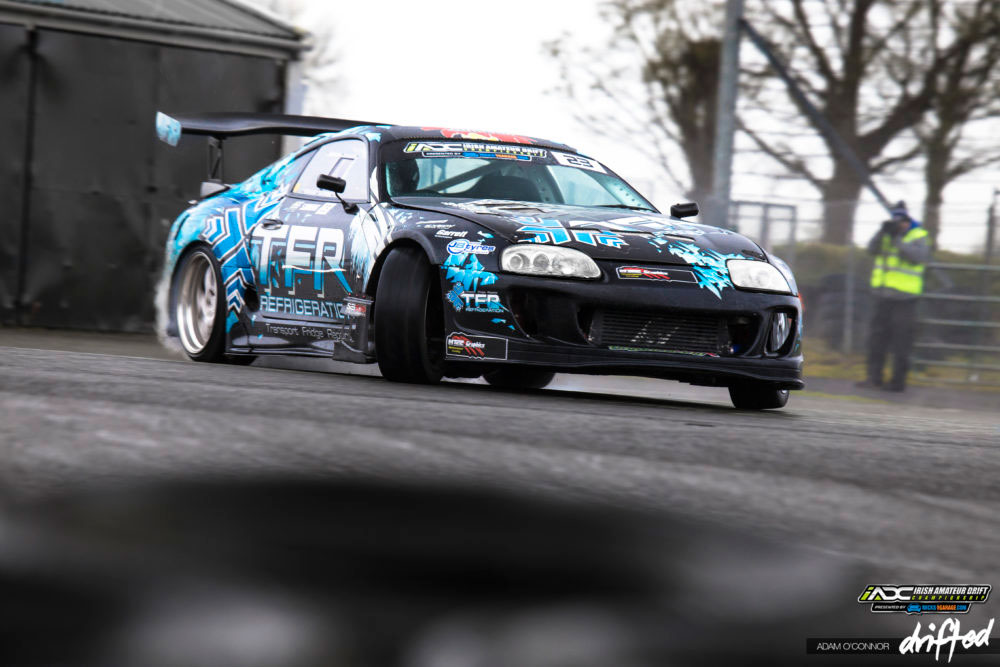

De ce facem asta?
Ei bine, asta este pasiunea multor șoferi: să aibă o mașină cât mai unicată și cât mai extravagantă.
Însă, motivul principal este pentru că ne place.
Scopul reglajului este îmbunătățirea performanței generale a unui vehicul ca răspuns la nevoile utilizatorului.